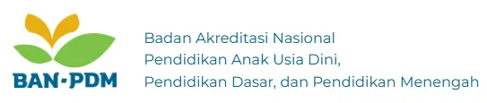

Butir 1
Komponen 1 : Kinerja Pendidik dalam Mengelola Proses Pembelajaran yang Berpusat pada Peserta Didik
Pendidik menyediakan dukungan sosial emosional bagi peserta didik dalam proses pembelajaran.

Akreditasi oleh BAN-PDM penting untuk menunjukkan bahwa satuan pendidikan telah memenuhi kelayakan berdasarkan penilaian mutu layanan pendidikan. Hasil akreditasi memberikan keyakinan kepada publik bahwa satuan pendidikan mampu memberikan pendidikan bermutu.
Informasi yang diberikan asesi, antara lain dokumentasi wajib, yaitu kurikulum, rencana kerja tahunan, rencana kegiatan dan anggaran, serta kalender akademik; Deskripsi kinerja asesi berisi penjelasan tentang kinerja dalam menyediakan layanan sesuai dengan butir yang diukur; Dokumentasi pendukung lainnya yang disampaikan kepada asesor saat pelaksanaan visitasi.
Video Petunjuk Navigasi Halaman :
